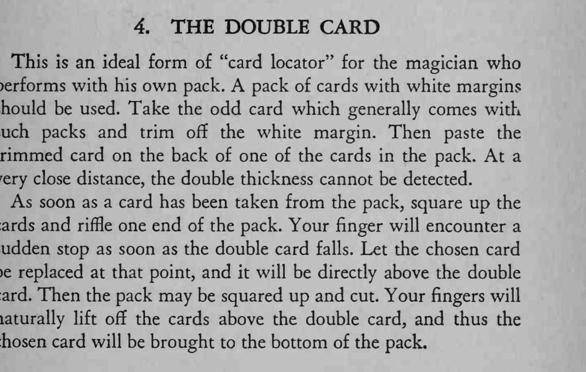

观众选牌放回、魔术师把牌切上几下，就能立刻找到选牌并把它翻出来。
双张牌要贴在整副牌中间，近距离看也察觉不出厚度差。

This is an ideal form of "card locator" for the magician who performs with his own pack. A pack of cards with white margins should be used. Take the odd card which generally comes with such packs and trim off the white margin. Then paste the trimmed card on the back of one of the cards in the pack. At a very close distance, the double thickness cannot be detected. As soon as a card has been taken from the pack, square up the cards and riffle one end of the pack. Your finger will encounter a sudden stop as soon as the double card falls. Let the chosen card be replaced at that point, and it will be direcdy above the double card. Then the pack may be squared up and cut. Your fingers will naturally lift off the cards above the double card, and thus the chosen card will be brought to the bottom of the pack.